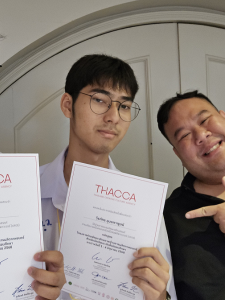

Hello! I'm Weeraphat Ubonkarn, a Grade 11 student at Phuketwittayalai School in the Multiple Intelligences Program. I have a strong passion for programming and web development, and I enjoy creating innovative projects that challenge my skills. In addition to coding, I have a keen interest in graphic design and digital art, which allows me to express my creativity visually. I'm always eager to learn new technologies and improve my abilities in both programming and design. In my free time, I like to explore new programming languages, work on personal projects, and stay updated with the latest trends in the tech world. I'm excited about the opportunities that lie ahead and look forward to contributing to the field of technology in meaningful ways.
